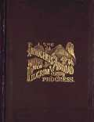
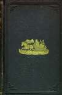
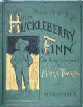
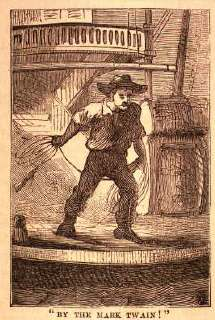

Searching Mark Twain In His Times & In His Texts

This archive currently supports two types of searching. You can:
SEARCH THE WHOLE SITE
SEARCH MARK TWAIN'S WORKS
For some advice about electronic searching,
CLICK HERE
.